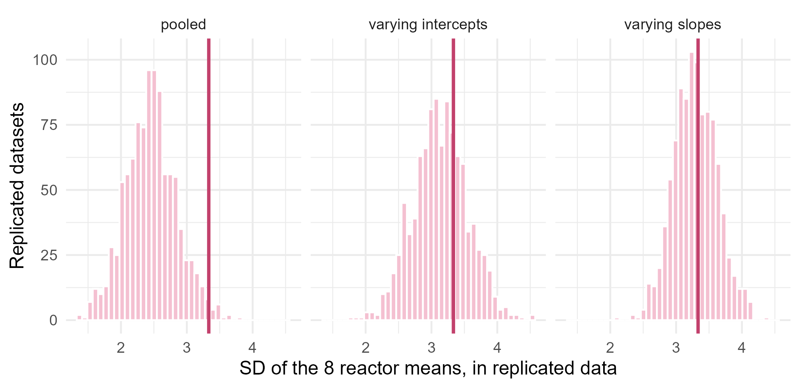

Module 5 · Lesson 13 of 13 Week 88 of 160 About 5–7 hours
Model checking and comparison
Is the model good enough, and which model is best?
Check Lesson 12’s catalyst models with posterior predictive checks that target what each one assumes, and compare them by how well they predict new data: compute the log pointwise predictive density, WAIC and leave-one-out cross-validation with the loo package, read Pareto k diagnostics, and find which reactors drive the difference. Finish with the Bayesian workflow that ties the module together.
Lesson 12 fitted three models to the eight reactors’ catalyst activity:
- Pooled: one straight line for all reactors,
activity_pct ~ day100. - Varying intercepts: each reactor starts at its own level, but all decline at the same rate,
activity_pct ~ day100 + (1 | reactor). - Varying slopes: each reactor has its own start and its own rate,
activity_pct ~ day100 + (day100 | reactor).
All three converged, and all three give a posterior. That’s not the same as being right. This lesson asks two questions every analysis should end with. Does each model reproduce the important features of the data? That’s model checking, with Lesson 10’s posterior predictive checks. And which model would predict new data best? That’s model comparison, with cross-validation. Then it puts everything in this module together, as the Bayesian workflow.
Three models walk into a reactor hall. Which one gets the job? We’ll hold a fair interview: same data, same questions, and points for predicting what they haven’t seen.
In this lesson you’ll:
- check models with posterior predictive checks aimed at their assumptions
- compute the log pointwise predictive density from posterior draws
- compute WAIC and leave-one-out cross-validation with the loo package
- read Pareto k diagnostics
- find which observations drive a model comparison
- put the module’s steps together into a workflow
Posterior predictive checks
The pooled model assumes that every reactor is the same. A test statistic that targets that assumption is the spread of the reactor means: the SD of the eight reactors’ average activities. The setup code has 1,000 posterior draws of each model, in pooled, intercepts and slopes.
Your turn. For each draw of the pooled model, simulate a replicated dataset at the same reactors and days, compute the SD of its reactor means, and find the posterior predictive p-value.
Compare with the observed activities, deact$activity_pct.
spread <- function(y) sd(tapply(y, deact$reactor, mean)) # the SD of the 8 reactor means
set.seed(5131)
T_rep <- sapply(1:nrow(pooled), function(s) spread(pooled$a[s] + pooled$b[s] * deact$day100 + rnorm(nrow(deact), 0, pooled$sigma[s])))
c(T_observed = spread(deact$activity_pct), p_value = mean(T_rep >= spread(deact$activity_pct)))The real reactor means have an SD of 3.3 points, and only 1.5% of the pooled model’s replicated datasets spread that much. The pooled model can’t reproduce the differences between reactors. (Some of the spread in the real means comes from R8, whose three measurements are all early, when activity is high. The replicated datasets have the same design, so the check allows for that.)
Here’s the same check for all three models: the histograms are the replicated datasets’ spreads, and the line is the real data’s:
intercepts <- read_csv("data/brms_deact_intercepts_draws.csv", show_col_types = FALSE)
spread <- function(y) sd(tapply(y, deact$reactor, mean))
rep_varying <- function(draws, seed) {
set.seed(seed)
A <- as.matrix(draws[, paste0("a_", deact$reactor)]); B <- as.matrix(draws[, paste0("b_", deact$reactor)])
sapply(1:nrow(draws), function(s) spread(A[s, ] + B[s, ] * deact$day100 + rnorm(nrow(deact), 0, draws$sigma[s])))
}
set.seed(5131)
rp <- sapply(1:nrow(pooled), function(s) spread(pooled$a[s] + pooled$b[s] * deact$day100 + rnorm(nrow(deact), 0, pooled$sigma[s])))
reps <- rbind(data.frame(T = rp, model = "pooled"),
data.frame(T = rep_varying(intercepts, 5135), model = "varying intercepts"),
data.frame(T = rep_varying(slopes, 5136), model = "varying slopes"))
ggplot(reps, aes(x = T)) +
geom_histogram(bins = 40, fill = "#F4C0D1", color = "white") +
geom_vline(xintercept = spread(deact$activity_pct), color = "#C2416C", linewidth = 1) +
facet_wrap(~ model, nrow = 1) +
labs(x = "SD of the 8 reactor means, in replicated data", y = "Replicated datasets") +
theme_minimal(base_size = 12)
The varying-intercepts model passes this check, because it lets each reactor have its own level. But it assumes that every reactor declines at the same rate, and a check of that assumption is the challenge at the end of the lesson. Each check tests one aspect of a model. A model that passes many well-chosen checks earns some trust. None can prove it right.
Predicting new data
Checks say whether a model is good enough. To choose between models that pass, the natural question is which one would predict new data best. The best measure of a prediction is the probability it gave to what actually happened. For a Bayesian model, that’s the posterior predictive density of a new observation, p(\tilde y \mid y) = \int p(\tilde y \mid \theta)\, p(\theta \mid y)\, d\theta, averaged over the posterior, and on the log scale.
We don’t have new data, but each observation can stand in for one. The first step is the log pointwise predictive density (lppd): for each observation, average its likelihood over the posterior draws, take the log, and add them up:
\text{lppd} = \sum_{i=1}^{n} \log\left(\frac{1}{S}\sum_{s=1}^{S} p(y_i \mid \theta^{(s)})\right).
The setup code’s log_lik_matrix() computes \log p(y_i \mid \theta^{(s)}) for every draw s and every observation i: a matrix with 1,000 rows and 114 columns.
Your turn. Compute the log-likelihood matrix for the varying-slopes model, and its lppd.
Average the likelihood, exp(ll), down each column, then take logs and sum.
ll <- log_lik_matrix(slopes)
dim(ll)
sum(log(colMeans(exp(ll))))An lppd of −176.5, from 1,000 draws of 114 observations. But it’s too optimistic: each observation was used to fit the model it’s now predicting, so it’s a little easier to predict than a genuinely new one would be. That optimism grows with the model’s flexibility, and the varying-slopes model is the most flexible of the three. A fair comparison has to correct for it.
WAIC
The widely applicable information criterion (WAIC) corrects the lppd by subtracting an estimate of the effective number of parameters, p_{\text{WAIC}}: the sum, over observations, of the posterior variance of the log-likelihood. An observation whose log-likelihood changes a lot from draw to draw is one the model bends to fit.
\widehat{\text{elpd}}_{\text{WAIC}} = \text{lppd} - p_{\text{WAIC}}, \qquad p_{\text{WAIC}} = \sum_{i=1}^n \text{Var}_s\big(\log p(y_i \mid \theta^{(s)})\big).
“elpd” is the expected log predictive density for new data, the quantity we want. Higher is better. (WAIC itself is -2 times this, on the “deviance” scale, where lower is better. Modern practice reports the elpd.)
Your turn. Compute p_{\text{WAIC}} and the elpd by hand, and compare them with loo::waic().
p_{\text{WAIC}} adds up the variance of each column: var.
ll <- log_lik_matrix(slopes)
lppd <- sum(log(colMeans(exp(ll))))
p_waic <- sum(apply(ll, 2, var))
c(p_waic = p_waic, elpd_waic = lppd - p_waic, loo_package = loo::waic(ll)$estimates["elpd_waic", "Estimate"])p_{\text{WAIC}} = 14.7 and elpd = −191.2, as the loo package says. The model has 2 × 8 reactor coefficients, plus the hyperparameters and \sigma, more than 20 in all, but they’re shrunk toward each other, so they behave like about 15 free parameters. The loo package also warned that some observations’ variances are large, and recommended leave-one-out cross-validation instead. Take its advice.
Leave-one-out cross-validation
The most direct estimate of out-of-sample prediction is leave-one-out cross-validation (LOO, Module 4, Lesson 7): fit the model without observation i, predict y_i, and repeat for every i. Refitting 114 times would be slow. Pareto-smoothed importance sampling (PSIS-LOO) avoids it: it reweights the existing draws, by importance sampling (Lesson 7), to approximate the posterior without each observation. The weights are 1/p(y_i \mid \theta^{(s)}), and their tail is stabilized by fitting a Pareto distribution to the largest ones.
Your turn. Compute PSIS-LOO for the varying-slopes model with loo::loo().
The table of estimates is fit_loo$estimates.
ll <- log_lik_matrix(slopes)
fit_loo <- loo::loo(ll)
fit_loo$estimatesAn elpd of −191.6, with a standard error of 7.5, and an effective number of parameters, p_{\text{loo}}, of 15.1: very close to WAIC. The standard error comes from the 114 pointwise values, and it matters when comparing models. (The loo package also warns that the “relative effective sample sizes” weren’t given. With brms, loo(fit) supplies them automatically. They only refine the Monte Carlo error of the estimate.)
Comparing the three models
loo::loo_compare() lines up several models’ LOO results, best first, with each one’s elpd difference from the best, and the standard error of that difference. A difference of several standard errors is a clear preference.
Your turn. Compute LOO for all three models, and compare them.
The third model’s draws are in pooled.
loo_slopes <- loo::loo(log_lik_matrix(slopes))
loo_intercepts <- loo::loo(log_lik_matrix(intercepts))
loo_pooled <- loo::loo(log_lik_matrix(pooled))
comparison <- loo::loo_compare(list(slopes = loo_slopes, intercepts = loo_intercepts, pooled = loo_pooled))
comparison[, c("elpd_diff", "se_diff")]| Model | elpd difference | SE |
|---|---|---|
| Varying slopes | 0 | |
| Varying intercepts | −24.6 | 6.6 |
| Pooled | −48.2 | 7.6 |
The varying-slopes model predicts best, by 24.6 points of elpd over varying intercepts, almost four standard errors: a clear win, even after paying for its extra flexibility. A rough rule: differences under 4 are small whatever their SE, and beyond that, compare them with their SE.
Pareto k diagnostics
PSIS-LOO comes with its own warning light. For each observation, the fitted Pareto distribution’s shape, k, says how reliable the importance sampling was. Below 0.7, the estimate is fine. Above it, the observation is so influential that removing it changes the posterior too much for reweighting to work, and that observation’s LOO estimate can’t be trusted. Then refit the model without it (loo(fit, reloo = TRUE) in brms), or use a more robust model.
Your turn. Find the varying-slopes model’s largest Pareto k, and which observation it belongs to.
Find the largest value of k.
fit_loo <- loo::loo(log_lik_matrix(slopes))
k <- loo::pareto_k_values(fit_loo)
i <- which.max(k)
c(max_k = k[i], n_over_0.7 = sum(k > 0.7))
deact[i, ]One observation has k = 0.77: R2’s measurement at day 282, 88.0%, which sits well above R2’s line (look back at Lesson 12’s plot), near the end of its series, where it pulls on R2’s slope. One mildly high k out of 114 doesn’t change the conclusion, since the models differ by 24.6, but it’s worth a sentence in a report. It’s also worth a look in the lab’s records: was something different that day?
Your turn. Which reactors’ observations favor the varying-slopes model most? The pointwise element of a LOO result has each observation’s elpd. Sum the differences between the two varying models by reactor.
Use the same column for both: "elpd_loo".
loo_slopes <- loo::loo(log_lik_matrix(slopes))
loo_intercepts <- loo::loo(log_lik_matrix(intercepts))
diff <- loo_slopes$pointwise[, "elpd_loo"] - loo_intercepts$pointwise[, "elpd_loo"]
round(tapply(diff, deact$reactor, sum), 2)Most of the advantage comes from R6, with 13.8 points, and R7, with 6.2: the reactors whose decline rates are furthest from the average, 3.6 and 6.8 points per 100 days. R8, the reason Lesson 12 was interested in varying slopes, contributes only 0.6: three early measurements can’t tell the two models apart. Pointwise comparisons show why one model wins, which is often more useful than the total.
The Bayesian workflow
This module has used every step of what Gelman and colleagues call the Bayesian workflow. It isn’t a recipe, but it’s a good checklist:
- Start from the question, and the data that answer it: what will the plant do with the answer? (Lesson 5’s decision.)
- Build a model of how the data arose, starting simple: the pooled model first, then the extensions.
- Choose priors, and check them with prior predictive simulations (Lesson 3).
- Fit the model, and check the computation: R-hat, ESS, divergences, and agreement with another method when you can (Lessons 8 and 9).
- Check the model against the data with posterior predictive checks aimed at its assumptions (Lessons 10 and 13).
- Improve and compare models, with LOO, and understand why one predicts better (this lesson).
- Use the posterior for what the question needs: probabilities, predictions and decisions (Lessons 5, 11 and 12).
- Report the model, the priors and their sensitivity, the checks, and the uncertainty, in words a decision-maker can use.
And Bayesian methods are everywhere in science and engineering: calibrating instruments and combining interlaboratory studies (Lesson 11), reliability and maintenance planning (Lessons 9 and 12), pharmacokinetics and dose-finding, process safety (Lesson 7), the search for lost ships and planes, climate and astrophysical models, and fitting computer simulations to measurements. They’re most valuable where data are scarce and expensive, prior knowledge is real, and decisions depend on the full uncertainty. Chemical engineering has all three.
Challenge round
Challenge 1 · Do the reactors decline at the same rate? The varying-intercepts model assumes they do. A test statistic that targets that assumption is the SD of the decline rates of R1 to R7, each fitted by its own least-squares line (R8, with three points, would only add noise). Compute its posterior predictive p-value for both varying models.
The second model’s draws are in slopes.
old <- deact$reactor != "R8"
slope_sd <- function(y) { # the SD of R1 to R7's least-squares slopes
b <- sapply(split(which(old), deact$reactor[old]), function(i) cov(deact$day100[i], y[i]) / var(deact$day100[i]))
sd(b)
}
ppp <- function(draws, seed) {
set.seed(seed)
A <- as.matrix(draws[, paste0("a_", deact$reactor)]); B <- as.matrix(draws[, paste0("b_", deact$reactor)])
T_rep <- sapply(1:nrow(draws), function(s) slope_sd(A[s, ] + B[s, ] * deact$day100 + rnorm(nrow(deact), 0, draws$sigma[s])))
mean(T_rep >= slope_sd(deact$activity_pct))
}
c(T_observed = slope_sd(deact$activity_pct), intercepts = ppp(intercepts, 5133), slopes = ppp(slopes, 5134))The real slopes have an SD of 1.08 points per 100 days. Not one of the varying-intercepts model’s 1,000 replicated datasets came close: their largest was 0.96. Its p-value is 0, and the varying-slopes model’s is 0.45. The check and the LOO comparison agree, which is reassuring. They don’t always: a check asks whether a model is wrong in some respect, LOO asks which model predicts best, and a model can be wrong in a way that hardly matters for prediction.
Challenge 2 · Model weights. Instead of choosing one model, you can combine their predictions. Stacking finds the weights that make the combined predictive distribution best under LOO. Compute them with loo::loo_model_weights().
The function is loo::loo_model_weights().
loos <- list(slopes = loo::loo(log_lik_matrix(slopes)), intercepts = loo::loo(log_lik_matrix(intercepts)), pooled = loo::loo(log_lik_matrix(pooled)))
loo::loo_model_weights(loos)All the weight goes to the varying-slopes model: the others add nothing to its predictions. When models are closer, stacking often spreads the weight, and the combined predictions beat any single model. It’s a good default when no model is clearly right, which in science is most of the time.
Quick quiz
1. What does a posterior predictive check test?
It’s aimed at one aspect of the model, through the test statistic.
2. Why is the lppd too optimistic as an estimate of predictive accuracy?
WAIC and LOO correct for that, by estimating the effective number of parameters, or by leaving each observation out.
3. In a LOO comparison, model A’s elpd is 3 higher than model B’s, with a standard error of 4. What should you conclude?
A difference smaller than about 4, or than a couple of its standard errors, isn’t a clear preference.
4. An observation has a Pareto k of 1.2. What does that mean?
Values below 0.7 are fine. High values flag very influential observations.
5. What is p_{\text{loo}}?
The varying-slopes model has more than 20 parameters, and a p_{\text{loo}} of 15.
6. Which step comes first in the Bayesian workflow?
Every later choice, from the model to the report, depends on what the answer is for.
Wrap-up
You’ve finished Module 5. Here’s what you’ve learned in this lesson:
- Posterior predictive checks aimed at a model’s assumptions found that the pooled model can’t reproduce the differences between reactors (p = 0.015), and the varying-intercepts model can’t reproduce the differences in their decline rates (p = 0).
- The lppd measures how well a model predicts its own data, too optimistically. WAIC and PSIS-LOO correct for that, with about 15 effective parameters for the varying-slopes model.
- LOO comparison ranks varying slopes first, by 24.6 points of elpd (SE 6.6) over varying intercepts, and 48.2 over the pooled model.
- Pareto k flagged one influential observation, R2 at day 282, which doesn’t change the conclusion.
- Pointwise differences show that R6 and R7, whose decline rates are furthest from the average, drive the comparison.
- The Bayesian workflow ties it all together: question, model, priors, computation, checks, comparison, use, and report.
TipPractice in RStudio (optional, about an hour)
Download deactivation.csv into your project’s data-raw/ folder. These steps need brms (Lesson 9).
- Fit the three models with brms, with Lesson 12’s priors, and run
loo(fit)for each andloo_compare(). Do you get the same ranking? (Your draws will differ from the lesson’s, so the numbers will too, a little.) - brms’s checks. Try
pp_check(fit, type = "stat_grouped", stat = "mean", group = "reactor")andpp_check(fit, type = "intervals_grouped", group = "reactor")for the pooled and the varying-slopes models. What does each show? - Refit for the high k. Run
loo(fit_slopes, reloo = TRUE), which refits the model without each observation that has k > 0.7. Does the elpd change? - K-fold cross-validation. Leave out a whole reactor at a time with
kfold(fit, group = "reactor"). That asks a different question: how well does each model predict a new reactor? Which model wins now?
NoteKey words from this lesson
- Model checking
- Asking whether a model reproduces the important features of the data, for example with posterior predictive checks.
- Model comparison
- Asking which of several models would predict new data best.
- Log pointwise predictive density (lppd)
- The sum over observations of the log of each one’s likelihood, averaged over the posterior draws.
- Expected log predictive density (elpd)
- The expected value of the lppd for new data, which WAIC and LOO estimate. Higher is better.
- WAIC
- The widely applicable information criterion: the lppd minus the effective number of parameters, estimated from the variance of the log-likelihood.
- PSIS-LOO
- Leave-one-out cross-validation approximated by Pareto-smoothed importance sampling of the posterior draws, without refitting.
- Pareto k
- The diagnostic of PSIS-LOO for each observation. Values above 0.7 mean that observation’s estimate is unreliable.
- Effective number of parameters
- How many free parameters a model behaves as if it had. Hierarchical shrinkage makes it smaller than the actual count.
- Stacking
- Choosing weights for several models’ predictions to make their combination predict best under cross-validation.
- Bayesian workflow
- The iterative process of building, fitting, checking, comparing and using Bayesian models.
NoteWant to read more?
- Aki Vehtari, Andrew Gelman and Jonah Gabry, “Practical Bayesian model evaluation using leave-one-out cross-validation and WAIC”, Statistics and Computing (2017). The paper behind the loo package, PSIS-LOO and the Pareto k diagnostic.
- Aki Vehtari, “Cross-validation FAQ”. Short, practical answers to the questions everyone has about LOO, including how to read differences and their standard errors.
- Andrew Gelman, Aki Vehtari, Daniel Simpson and others, “Bayesian workflow” (2020). The long paper that describes this lesson’s checklist, with many examples.
- Alicia Johnson, Miles Ott and Mine Dogucu, Bayes Rules!, chapter 10, “Evaluating regression models”, and chapter 11, “Extending the normal regression model”, for model comparison in practice.